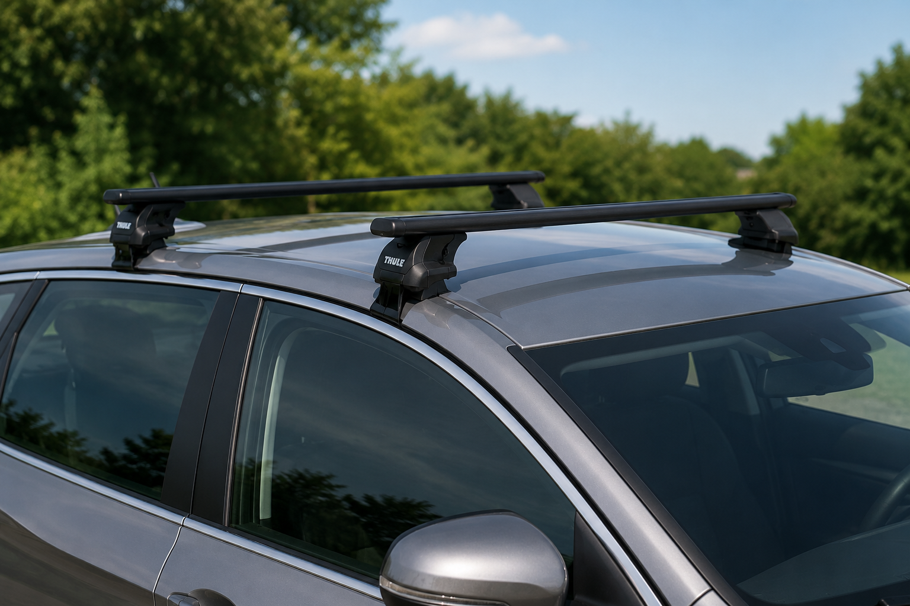
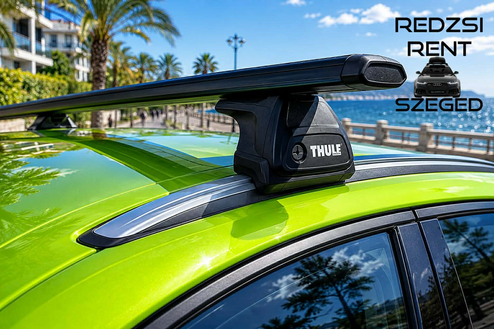
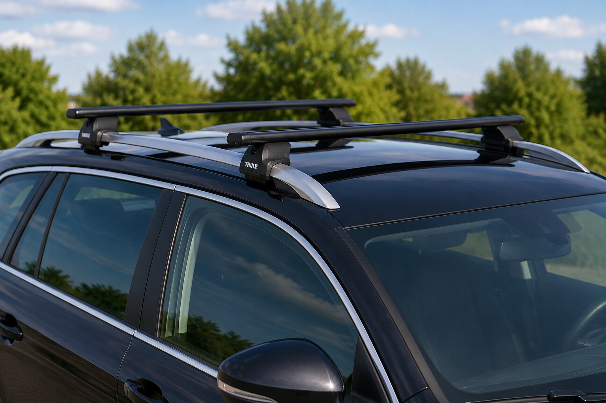

Tetőcsomagtartó bérlés Szegeden
Ha tetőboxot bérelnél, de nincs hozzá tetőcsomagtartód, segítünk a megfelelő Thule talp és keresztrúd kiválasztásában is. A pontos típus az autó tetőkialakításától függ.
Mire van szükség a pontos kiválasztáshoz?
Autó típusa
Márka, modell és évjárat alapján lehet pontosan megállapítani, milyen Thule talp illik az autóra.
Tető kialakítása
Nem mindegy, hogy normál tető, fixpont, tetősín, integrált sín vagy tetőkorlát van az autón.
Felhasználás
Tetőboxhoz stabil, megfelelő teherbírású keresztrúd szükséges, amit mindig az autóhoz igazítunk.
Gyakori autótető típusok

Normál tető
A talp az ajtókeretnél kapaszkodik, külön rögzítő készlettel.

Integrált tetősín
A sín szorosan illeszkedik a tetőhöz, speciális Thule talppal.

Tetőkorlát
A keresztrudak a kiemelkedő tetőkorlátra kerülnek fel.
Rögzítési módok röviden
| Rögzítés típusa | Mit jelent? |
|---|---|
| Normál tető | A talp az ajtókeretnél kapaszkodik, külön rögzítő készlettel. |
| Fixpontos tető | Az autó tetején gyárilag kialakított rögzítési pontok vannak. |
| Tetőkorlát | Az autón hosszanti, kiemelkedő korlát található, erre kerülnek a keresztrudak. |
| Integrált tetősín | A sín szorosan illeszkedik a tetőhöz, ehhez speciális Thule talp szükséges. |
| T-profilos sín | Süllyesztett, speciális sínrendszer, amelyhez külön kompatibilis megoldás kell. |
Ár
- Tetőcsomagtartó bérlés: minimum 5 napra 20 000 Ft.
- 5 nap után: 1 000 Ft / nap.
- Fontos: a pontos kompatibilitást mindig az autó típusa alapján ellenőrizzük.
Kérdésed van?
Ha nem vagy biztos benne, milyen tetőcsomagtartó illik az autódra, vagy segítségre van szükséged a tetőbox bérléshez, keress minket bátran.
Kapcsolat